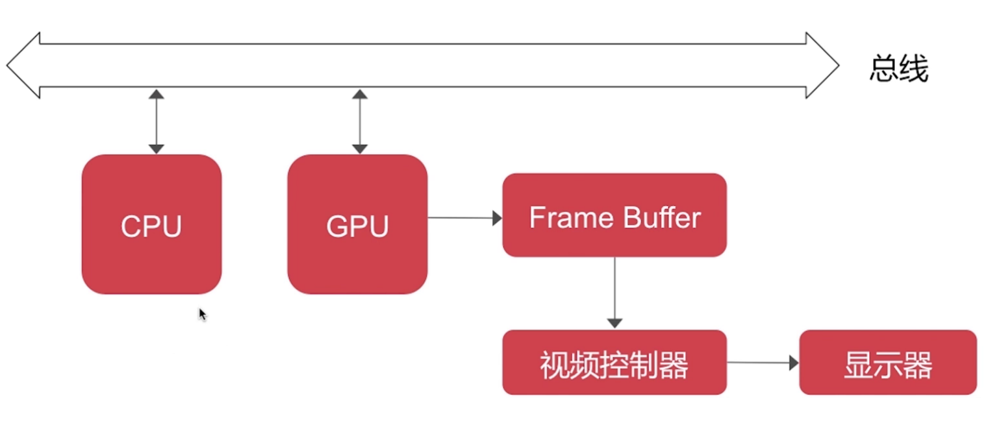
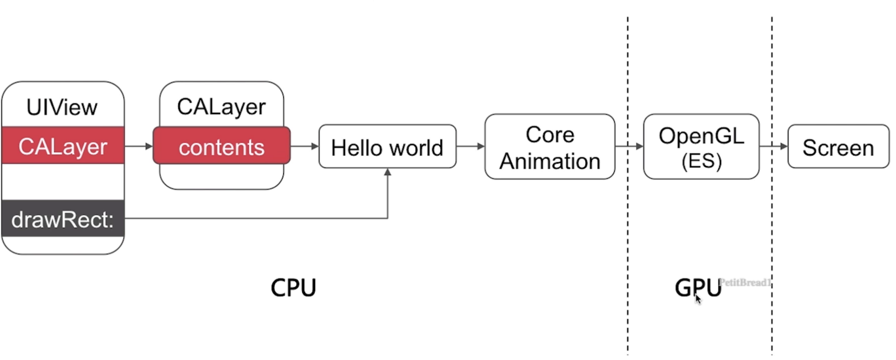

1.4UI图像显示原理
 
CPU工作
UI布局 文本计算 绘制，比如 drawRect 方法 图片编解码 提交位图
GPU 渲染管线
纹理渲染 视图混合
图像显示各组件分工：
~ CPU：计算视图frame，图片解码，绘制纹理交给GPU。
~ GPU：纹理混合，顶点变换，渲染到帧缓冲区。
~ 时钟信号：垂直同步信号V-Sync / 水平同步信号H-Sync。
~ iOS设备双缓冲机制：前/后帧缓冲区。
~ CRT：阴极电子枪发射电子，在阴极高电压的作用下，电子由电子枪射向荧光屏，使荧光粉发光，将图像显示在屏幕上。采用时钟信号控制。
~ LCD：（光学成像原理）在不加电压的情况下，光线会沿着液晶分子的间隙前进旋转90°，光可以通过。在 加入电压后，光沿着液晶分子的间隙直线前进，被滤光板挡住。
~ 注：LCD的成像原理与CRT截然不同，每一个像素的颜色在需要改变时才去改变电压，但扔需要按照一定的刷新频率向GPU获取新的图像用于显示。
图像撕裂原因分析
•图像撕裂：当视频控制器还未读取完成时，GPU将新的一帧内容提交到帧缓冲区并把两个帧缓冲区进行更新后，视频控制器就会把新的一帧数据的下半段显示到屏幕上，造成画面撕裂的现象。
•解决方案：垂直同步机制
•弊端：GPU会等待显示的V-Sync信号发出后，才进行新的一帧渲染和缓存区更新。能解决画面撕裂现象，也增加了画面流畅度，但需要消耗更多的计算资源，由此可能导致卡顿。